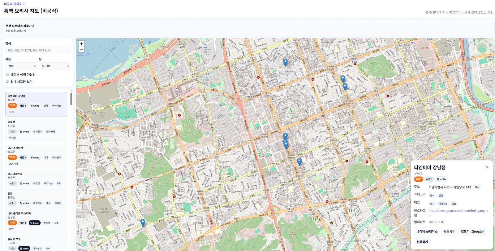

Chef Map
셰프들의 식당을 지도 하나로 정리했어요
위치만 딱 확인하고 싶을 때를 위해 흑백 요리사에 등장했던 셰프들의 식당을 한 화면에 모았습니다.
- 지역별로 빠르게 찾아보기
- 공식 링크와 정보를 한 번에 확인
- 모바일/데스크톱 모두 보기 편한 레이아웃
실제 맵 화면

바로가기
지금 바로 흑백 요리사 맵을 열어보세요
흑백 요리사에 등장한 셰프들의 식당을 한눈에 모아둔 지도, 클릭 한 번으로 이동할 수 있어요.